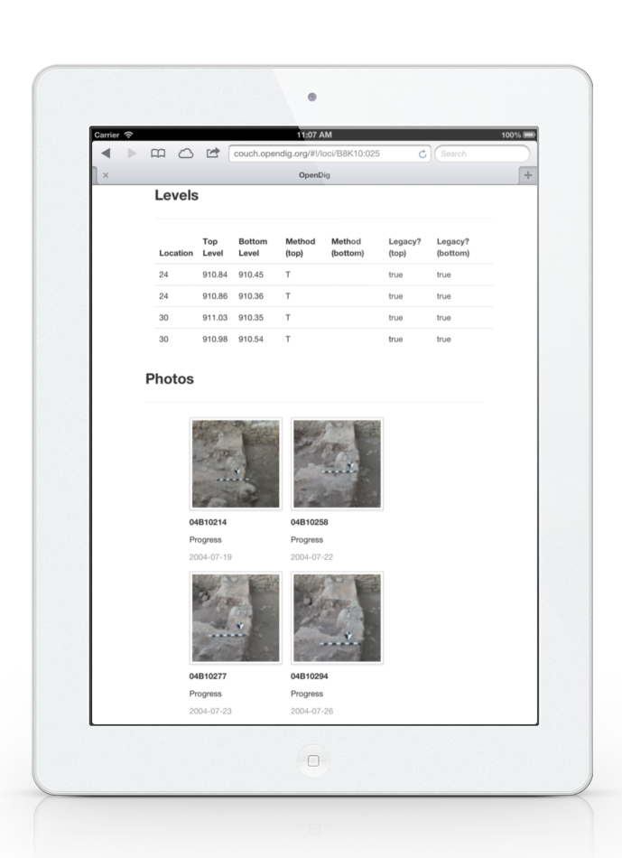

digital field recording for archaeology in the 21st century
See it in action →
Sloppy handwritten notes are one of the greatest mysteries of archaeology. OpenDig is digital, that means no more unreadable notes to decipher back at the lab.
OpenDig is a framework allowing you to rapidly move your data from the field, to the lab, to permanent storage; all with the touch of a button.
OpenDig makes it easy for you to publish your primary data online with a robust platform built on web standards.
Using iOS based devices, OpenDig works on technology you already have: iPads, iPhones and iPods all work to record your excavation data. These data are collected using a recording structure you specify, so it works with what you're used to using. If you're a new project, you can pick from one of the pre-existing recording systems provided by other digs.
OpenDig grew out of field projects with little or no Internet connectivity. We needed an easy to deploy field server to manager our data during the excavations. A quick install and OpenDig can be deployed to any computer to work as a server. If you have an Internet connection present, you can either work directly off the main server, or use this as a temporary server.
Field recording tools and lightweight lab servers are great for a short-period of time, but eventually researchers will need to work with tools that help them access these data quickly and easily. The OpenDig framework relies on a Ruby on Rails application to handle this stage of the process. Researchers can create collections of excavation units, visualize GIS data, and connect with other tools for a complete research station.
OpenDig. Free your notes.
© ave.rails, OpenDig & Matthew L. Vincent